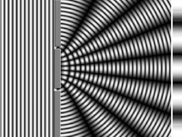
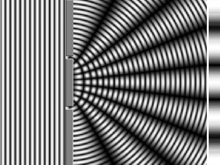

When we wake up brushed by panic in the dark,
our pupils grope for the shape of things we know.
Photons loosed from slits
like greyhounds at the track
reveal light’s doubleness in their cast shadows that stripe a dimmed lab’s wall.
—particles no more—
and with a wave
bid all certainties goodbye.
For what’s sure in a universe
that dopplers away like a siren’s midnight cry?
They say
a flash seen from on and off a hurtling train
will explain why time dilates like a perfect afternoon;
predicts black holes where parallel lines will meet,
whose stark horizon, even starlight, bent in its tracks, can’t resist.
If we can think this far, might not our eyes adjust to the dark?

 
